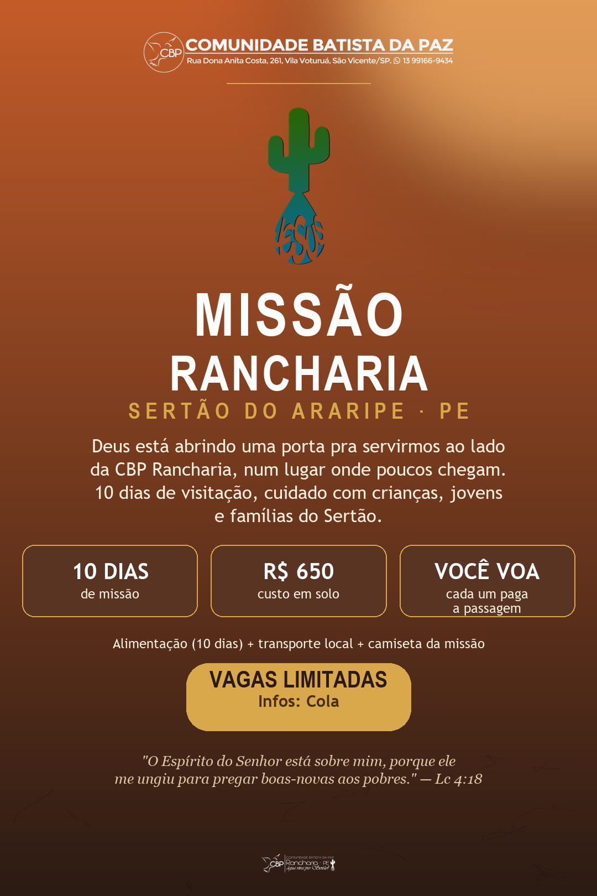

A CBP Rancharia é nossa igreja filha no interior de Pernambuco, num povoado do município de Granito. "Água viva pro Sertão" é mais que um lema: é o que levamos junto com o Evangelho a quem vive num dos lugares onde poucos chegam.

Saída dia 7 de janeiro de 2027, retorno dia 18 de janeiro. Rancharia é um povoado do município de Granito, no Sertão do Araripe, Pernambuco, perto de Exu, a cerca de 70 km de Juazeiro do Norte (CE), a referência urbana e aeroportuária da região. Clima semiárido, quente e seco: proteção solar e hidratação ali são itens de segurança, não de conforto.
O modelo é simples: cada participante compra sua própria passagem aérea até Juazeiro do Norte (referência de ~R$ 1.600 ida e volta). A CBP cobra apenas o custo em solo, de R$ 650 por pessoa, e a CBP Rancharia articula o transporte local entre Juazeiro e o povoado.
| Está incluso nos R$ 650 | Não está incluso |
|---|---|
| Alimentação completa dos 10 dias | Passagem aérea até Juazeiro do Norte |
| Transporte local (Juazeiro ↔ Rancharia) | Deslocamento de casa até o aeroporto |
| Camiseta oficial da missão |
O princípio que guia tudo: servir com a comunidade, ao lado da liderança local, nunca por cima dela. Chegar como quem pede licença, honra os mais velhos, aceita o café e escuta.
Brincadeiras, teatro, música e contação de histórias no fim da tarde, sempre com responsáveis e autorização de imagem.
Rodas sobre projeto de vida, oficinas de fotografia, música, esporte e torneio de futebol.
A frente mais importante: duplas e trios visitando famílias e sítios afastados, para escutar, orar e tomar um café.
Visitas com música (sanfona e violão são ouro por lá), escuta e oração.
Pintura e pequenos reparos em igreja, escola ou casa vulnerável, comprando material no comércio local.
Cultos e louvor na praça, testemunhos e exibição de filme com pipoca, que costuma atrair o povoado inteiro.
O jeito de estar: escutar antes de propor. Honrar a cultura local, a devoção a Padre Cícero, o forró, as tradições. Nomear necessidades, nunca rótulos. Presença vale mais que performance. Imagem sempre com ética e consentimento.
A CBP Rancharia é a base local da nossa missão, uma congregação filha da CBP Sede que já está presente e viva no povoado. É com a liderança dela que a missão se planeja: alojamento, cozinha, agenda e o mapeamento das famílias visitadas. Ir a Rancharia é, antes de tudo, servir ao lado de quem já está lá.
Se o Senhor tocar seu coração, chama a liderança e garanta seu lugar nessa missão. Vem com a gente!
Falar com a liderança“O Espírito do Senhor está sobre mim, porque ele me ungiu para pregar boas-novas aos pobres.” — Lucas 4.18